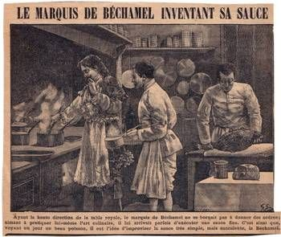

Historia:
Nacimiento: Surgió en la Francia del siglo XVII como una técnica para freír bolas de carne picada (del francés croquer, crujir).
Evolución: En 1817, el chef francés Antonin Carême perfeccionó la receta dándole el rebozado crujiente actual.
Salto a España: Llegó a finales del siglo XIX, pero en España se transformó: se cambió la base de patata por la bechamel y se convirtió en el plato estrella para aprovechar las sobras (especialmente del cocido).